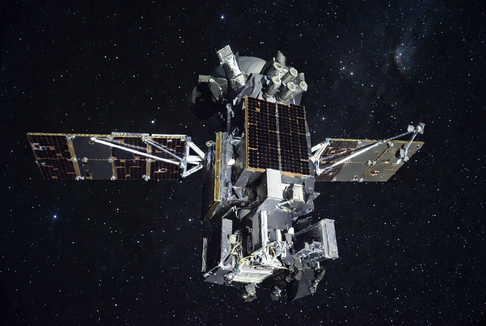
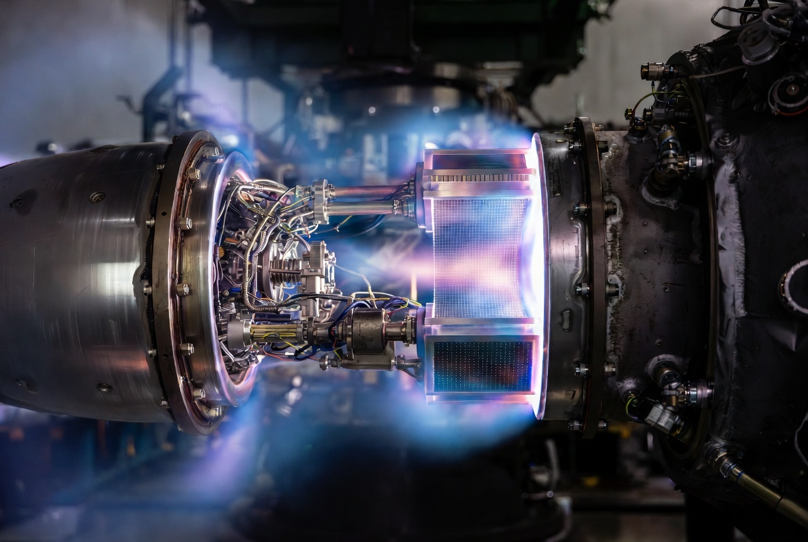
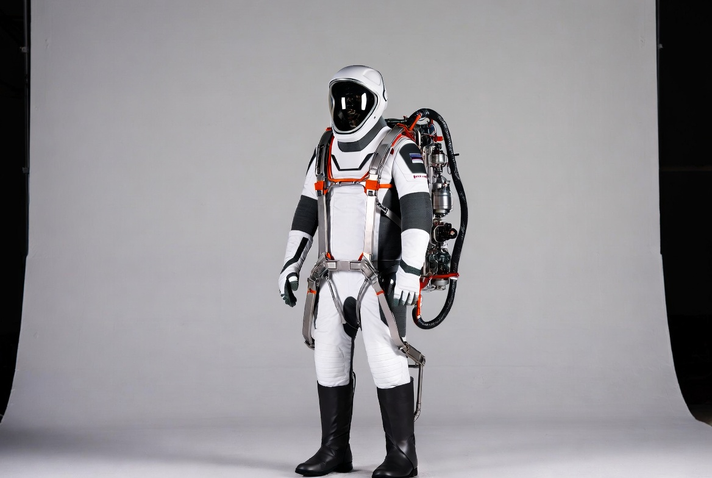
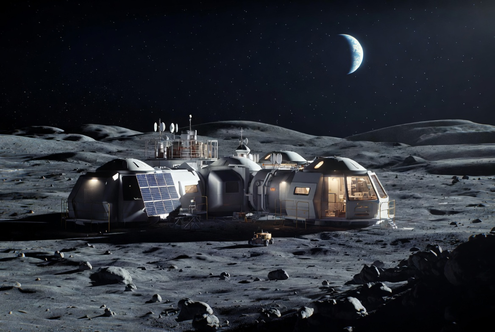
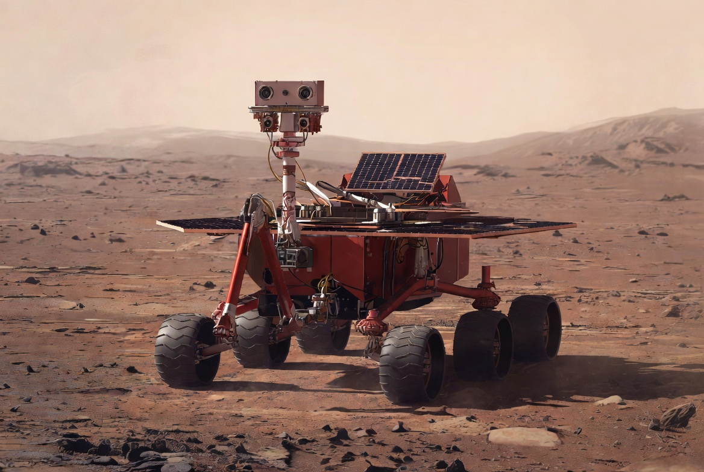
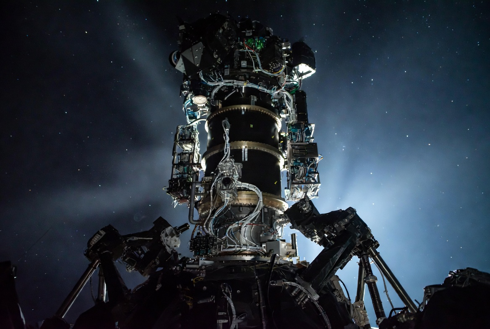

Nuestra Tecnología
Cada producto Nova Aerospace es el resultado de años de investigación aplicada, pruebas en condiciones extremas y la experiencia combinada de más de 50 ingenieros y científicos de élite mundial. Diseñamos para los entornos más hostiles del universo conocido.

Satélite Orbital X-1
Plataforma de monitoreo climático avanzado y telecomunicaciones de alta frecuencia optimizada para órbitas bajas y medias. Autonomía de 12 años en servicio continuo.

Propulsor Iónico Vesta
Motor de plasma de cuarta generación y alta eficiencia energética. Diseñado para misiones interplanetarias de larga duración con mínimo consumo de propergol.

Traje EVA Mk IV
Sistema de soporte vital de nueva generación con exoesqueleto de aleación de titanio. Reduce el peso un 15% respecto al modelo anterior, maximizando la movilidad en actividades extravehiculares.

Módulo Habitable Lunar
Estructura presurizada, autosuficiente y de despliegue autónomo. Diseñada para alojar hasta 6 personas durante 24 meses en las futuras colonias permanentes en la Luna.

Rover 'Crimson'
Vehículo terrestre autónomo de seis ruedas diseñado para soportar tormentas de polvo marcianas de categoría 5. IA de navegación integrada con aprendizaje en tiempo real.

Sensor Estelar
Sistema de mapeo cuántico para navegación milimétrica en el espacio profundo. Precisión angular de 0,001 arcsegundos sin necesidad de señal GPS.